library(tidyverse)
library(plotly)
library(gt)Visual Description of Data 
11.118/11.218 Applied Data Science for Cities
Overview
Today’s tutorial will walk you through the process of exploring a dataset, gradually developing findings, and turning one of those findings into a presentable graph. Along the way, we will look at how plots can help us diagnose patterns in the data, as well as how we can use them to communicate our findings. We will also go over some practical techniques for modifying a dataset and adjusting colors.
Background
Inside Airbnb is a publicly available dataset built by scraping Airbnb’s platform. Airbnb is best known for short-term rentals, and a group of housing activists created the site to bring transparency to how those rentals affect cities around the world. They scraped and compiled multiple attributes of Airbnb properties: listings, hosts, prices, availability, reviews, etc.
The motivation of compiling this resource is the tension between short-term rental platforms and the long-term housing market. Advocates argue that when homes are repurposed for short-term rentals, it practically reduces the availability of affordable housing, while also driving up rental costs and adding displacement pressure on local communities.
Many cities respond with rules. In Boston, for example, rentals under 28 days are regulated. If you want to operate your property as a short-term Airbnb rental (under 28 days), you have to be the primary resident of the unit, limit your guest count, and follow city registration, annual fees, fire safety postings, etc. Basically, the city wants residential housing to benefit tenants, not be turned into full-time hotels.
The Data We Use Today
As with previous labs, start by creating a working folder for Lab 2 and setting up a new R Project inside it.
Use a regular R script to experiment with your code first. Later, in the Exercise section, you will create a Quarto document to compile your report.
Go to the Get the Data page on Inside Airbnb and search for Boston. Under “Boston, Massachusetts, United States” you will see a list of files with descriptions.
Download listings.csv, described as “Summary information and metrics for listings in Boston (good for visualizations).” It’s already cleaned up, so it’s an easy way to start.

Note: Skip the .gz version, which is the raw data scraped directly from Airbnb. We won’t use it today.
Read the data into R.
airbnb <- read_csv("data/listings.csv")The file has 19 variables. Before plotting, skim the Data Dictionary to understand what each one means and what it tells you about a property.
Understand the data
Here we first make some quick plots of any variables that catch our eye, looking for patterns.
For example, I’m interested in minimum nights, which is the minimum length of stay required if you want to book this property. When browsing this column, I see a variety of values, so I make a quick histogram to see the distribution of these values.
airbnb |>
ggplot(aes(x = minimum_nights)) +
geom_histogram(bins = 50)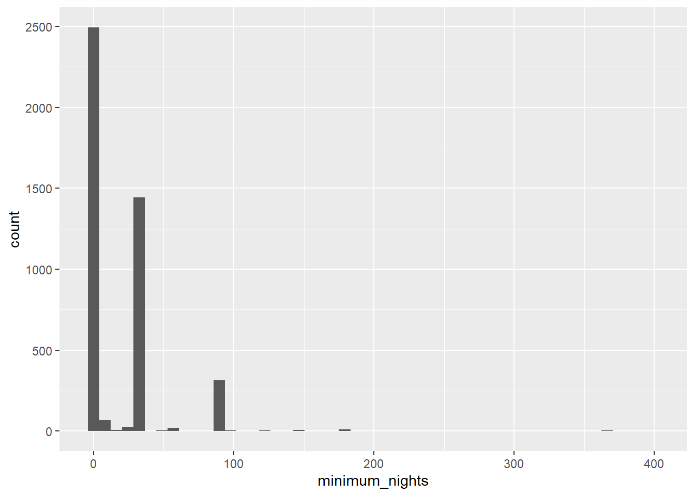
Stays of 1-2 days seem to be the most common, and stays over 200 days are rare. But there is something going on under 100 days. There are a couple of humps that, at this scale, I can’t see clearly, so I’m going to take a closer look at this part.
In the following code:
filter(minimum_nights < 100): recall that withinfilter, the argument is a condition, so this subsets the data to rows that satisfy it. I want to find all listings with a minimum night requirement less than 100, in other words, zoom in to the range I’m interested in.scale_x_continuous(breaks = seq(0, 100, 5)): this adjusts the axis tick breaks. As I zoom in, I want more precise numbers to show on the axis. Here,seq(0, 100, 5)reads: start at 0, end at 100, in steps of 5.
airbnb |>
filter(minimum_nights < 100) |>
ggplot(aes(x = minimum_nights)) +
geom_histogram(bins = 50) +
scale_x_continuous(breaks = seq(0, 100, 5))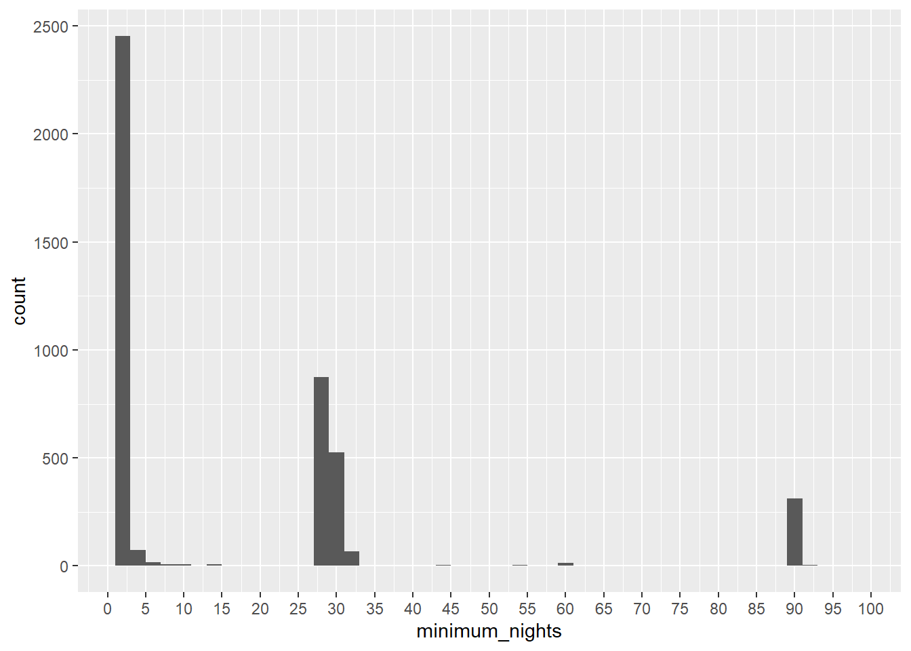
After zooming in on the 0-100 day range, there are some listings clustered right around 90 days (3 months), but there is a second, bigger cluster right around 30 days. From my background knowledge, this is where the 28-day rules matter. So I zoom in again to take a closer look at this cluster.
airbnb |>
filter(minimum_nights > 25 & minimum_nights < 35) |>
ggplot(aes(x = minimum_nights)) +
geom_histogram(bins = 50) +
scale_x_continuous(breaks = seq(0, 35, by = 1))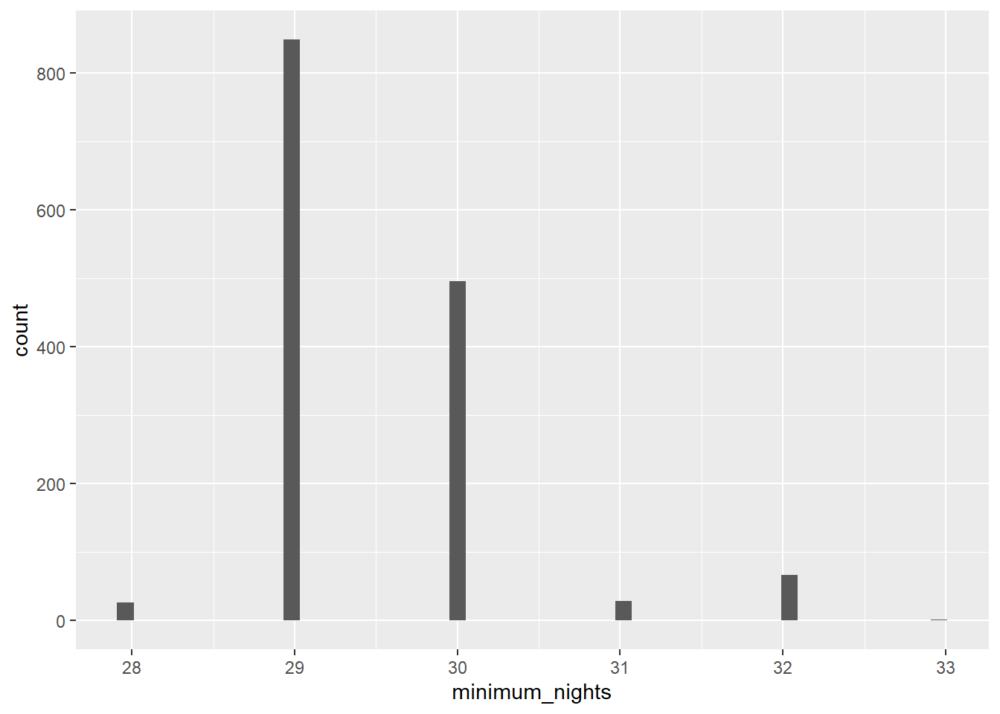
Many properties set their minimum stay at 29 days. Does that just reflect travel needs, or is it a way to avoid regulation?
I found that interesting, and I want to show this to my audience.
Refine My Graph
There can be many ways to show this message. As a simple example, we could polish our graph by adding a vertical line and annotation to the histogram we created earlier.
airbnb |>
filter(minimum_nights < 100) |> # zoom in to minimum stay less than 100 days
ggplot(aes(x = minimum_nights)) +
geom_histogram(bins = 100) +
scale_x_continuous(breaks = seq(0, 100, 5)) +
geom_vline(xintercept = 28, linetype = "dashed") +
annotate(
"text",
x = 25,
y = 800,
angle = 90,
label = "Short Term Rental Threshold"
)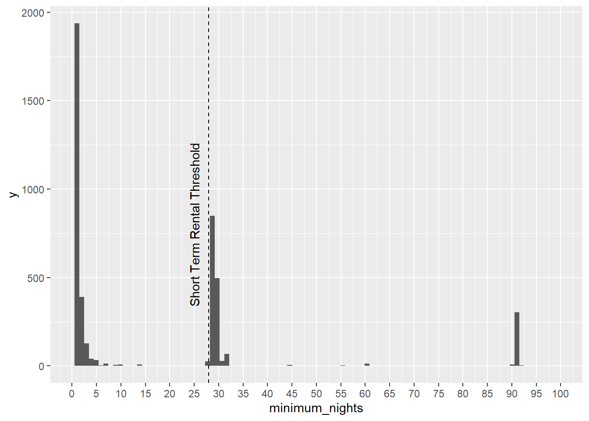
But we left a lot of empty spaces on the graph, and there is still room to improve the clarity.
Create Groups for Continuous Values
Because there are several clusters with wide gaps in between, I don’t want to show the entire histogram. What I want to say is: although there are a lot of 1-day minimums, a lot of 2-3 day minimums, there is less in the 4-28 groups, but a notable cluster just above the 28-day short-term rental line. It would be great if I could group my values in this way and compare.
cut() is usually used to take a series of values and put them into buckets.
The breaks argument in cut()controls the breaking points, or how the values are separated. For example, cut(seq(0, 10), breaks = 5) creates 5 equal-interval buckets, putting each value from 1 to 10 into a bucket with an interval of 2.
We can also define our own breakpoints, to sort values into custom, user-defined buckets:
minstay <-
airbnb |>
mutate(bucket = cut(minimum_nights,
breaks = c(0, 1, 2, 3, 7, 28, 30, Inf),
labels = c("1 night", "2", "3", "4-7", "8-28", "29-30", "31+")))In the newly created variable minstay, at the very right, you see a column called bucket. We have sorted the properties into different groups based on their set minimum stay.
This new column enables us to count:
minstay |>
group_by(bucket) |>
summarise(count = n()) # A tibble: 7 × 2
bucket count
<fct> <int>
1 1 night 1937
2 2 389
3 3 127
4 4-7 91
5 8-28 53
6 29-30 1345
7 31+ 472or generate some percentages:
minstay |>
group_by(bucket) |>
summarise(count = n()) |>
mutate(percentage = count / sum(count) * 100)# A tibble: 7 × 3
bucket count percentage
<fct> <int> <dbl>
1 1 night 1937 43.9
2 2 389 8.81
3 3 127 2.88
4 4-7 91 2.06
5 8-28 53 1.20
6 29-30 1345 30.5
7 31+ 472 10.7 Looks good, so I will save this summary table, and prepare drafting my visualizations from it.
Map Colors with Palettes
Here is a basic bar chart, putting buckets of minimum stays on the x-axis, and the number of properties on the y-axis.
minstay_table |>
ggplot(aes(x = bucket, y = count)) +
geom_col()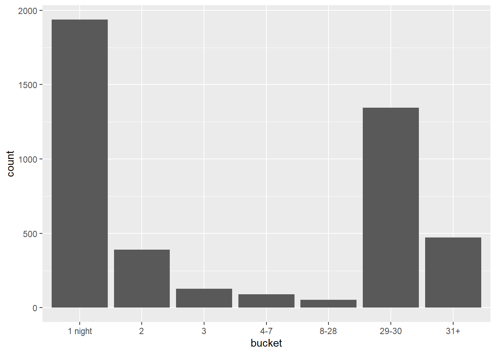
ggplot provides several ways to modify colors. First we add a fill argument, it starts to deploy default colors.
minstay_table |>
ggplot(aes(x = bucket, y = count, fill = bucket)) +
geom_col()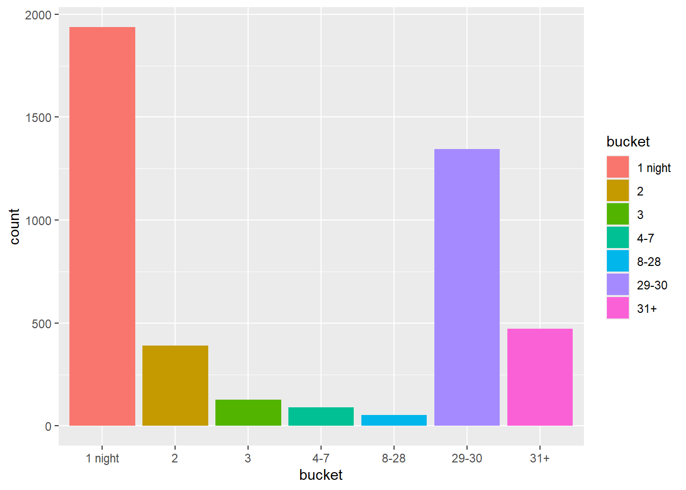
But we can certainly decide the color ramp we want to use. Color adjustments in ggplot are handled through a scale_fill_xxx() function (or scale_color_xxx() for points/lines).
For example, scale_fill_manual() allows us to manually specify colors. You can type in either color names or hex codes.
minstay_table |>
ggplot(aes(x = bucket, y = count, fill = bucket)) +
geom_col()+
scale_fill_manual(values = c("#990000", "#D7301F", "#EF6548", "#FC8D59", "#FDBB84", "#FDD49E", "#FEE8C8"))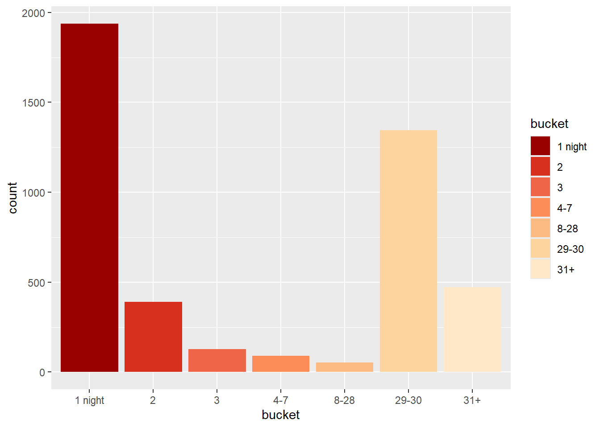
That’s painful to type them all out. So there’s no need to. Most often, we use an existing palette to pick colors from.
scale_fill_brewer() draws from R ColorBrewer. You can find the complete list of palette names here. Pick one and plug its name in:
minstay_table |>
ggplot(aes(x = bucket, y = count, fill = bucket)) +
geom_col()+
scale_fill_brewer(palette = "YlOrRd")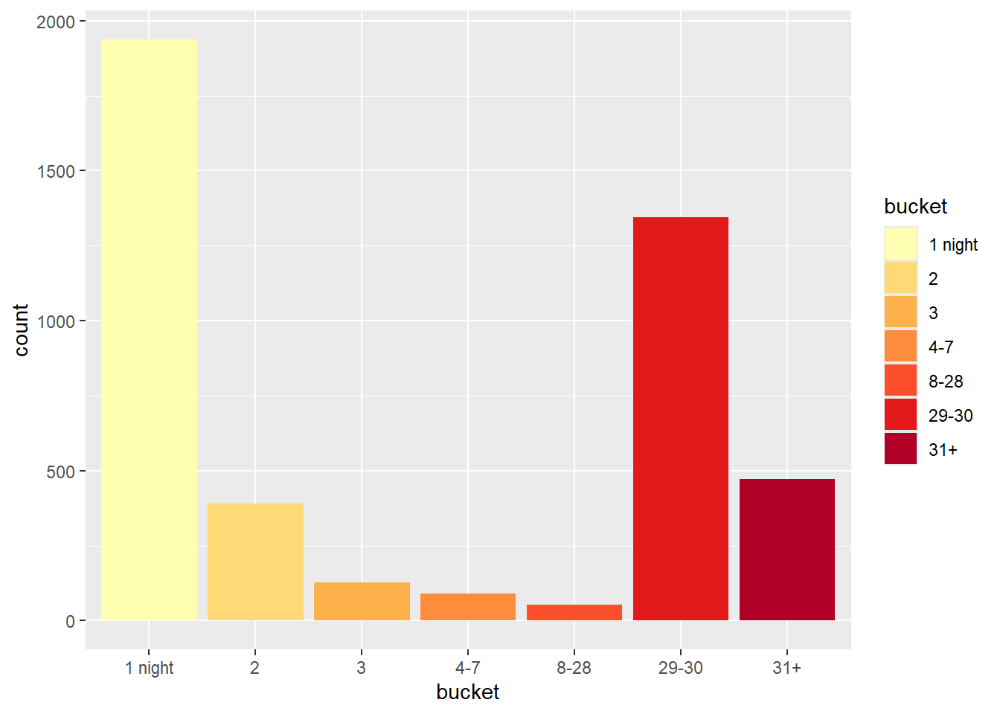
Another good option is Viridis, a set of palettes designed to be colorblind-friendly. You can find the list of palette names here. Note: I used scale_fill_viridis_d() since your bucket variable is discrete.
minstay_table |>
ggplot(aes(x = bucket, y = count, fill = bucket)) +
geom_col()+
scale_fill_viridis_d(option = "magma")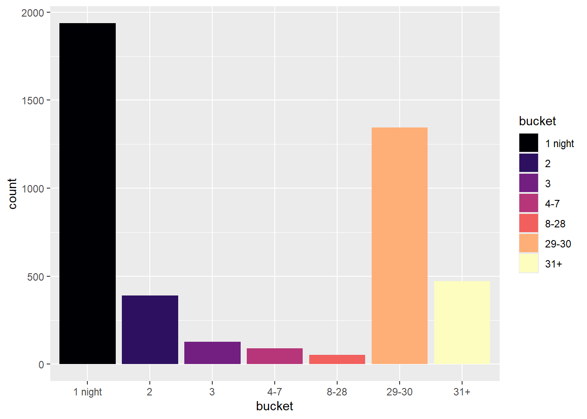
Color can be used to carry meanings: a monochromatic ramp works for values that move along a single continuous scale, a diverging palette works when there’s a meaningful midpoint, dark, saturated colors draw the eye, light colors recede into the background, etc. So if an existing color palette doesn’t fully satisfy you, you can modify the graph to point to what matters.
For instance, we can change the color of our graph like this.
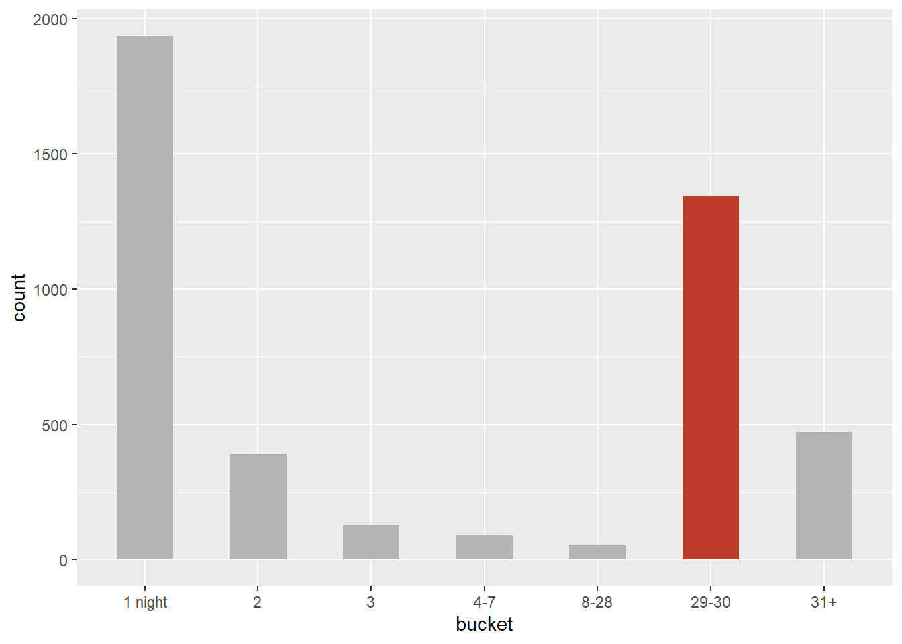
I will show you one way to do this. Let’s create a new column (and call it highlight) in minstay_table .
minstay_table |>
mutate(highlight = if_else(bucket == "29-30", "yes", "no")) # A tibble: 7 × 4
bucket count percentage highlight
<fct> <int> <dbl> <chr>
1 1 night 1937 43.9 no
2 2 389 8.8 no
3 3 127 2.9 no
4 4-7 91 2.1 no
5 8-28 53 1.2 no
6 29-30 1345 30.5 yes
7 31+ 472 10.7 no Then we can use this highlight column as fill = .
minstay_table |>
mutate(highlight = if_else(bucket == "29-30", "yes", "no")) |>
ggplot(aes(x = bucket, y = count, fill = highlight)) +
geom_col(width = 0.5) +
scale_fill_manual(
values = c("grey70", "#c0392b")
)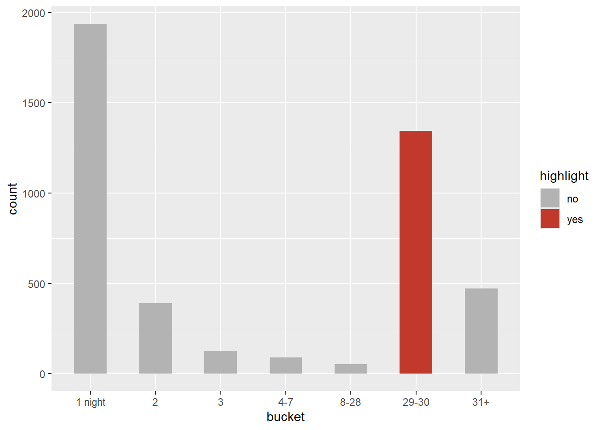
Suppose I’m satisfied with this graph setting now. I’ll clean it up and add some final details. In the code below:
theme_minimal()strips away “non-data ink”, like gridlines and background shadingcoord_flip()flips the axes, which makes the bucket labels easier to read.- Use
labs()to add a meaningful title. theme(legend.position = "none")removes the legend, since the highlighted color already makes its own point without one.
minstay_table |>
ggplot(aes(x = bucket, y = count, fill = bucket == "29-30")) +
geom_col(width = 0.5) +
scale_fill_manual(
values = c("grey70", "#c0392b")
) +
coord_flip() +
labs(
title = "30% of Boston's listings require a minimum stay of 29 or 30 days",
subtitle = "They sit just past Boston's 28-day short-term-rental threshold",
x = "",
y = "Number of Listings")+
theme_minimal() +
theme(legend.position = "none")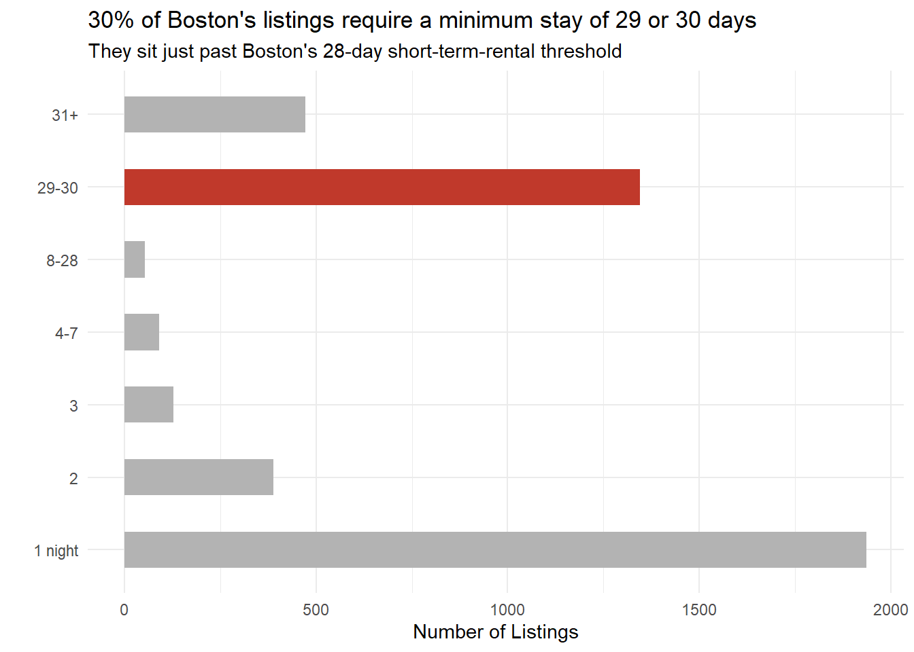
We are going to stop modifying this graph here. Of course, you can keep going: show percentages instead of raw counts, adjust the x-axis ticks, or critique my grouping logic, apply your own metrics and so on. But for this section, we have demonstrated how to create groups and control colors. These are useful techniques that you will likely use quite often when creating plots and maps.
Quick Interactive Graphs and Tables
Add Hovering Tooltips with plotly
As we mentioned in class, many ggplot graphs can be easily transformed into interactive plotly graphs with tooltips. Let’s use minstay_table to demonstrate that.
You will first need to complete your ggplot graph. Set up everything you need, including the colors, line widths, title, and so on.
minstay_table |>
ggplot(aes(x = bucket, y = count)) +
geom_col(fill = "lightblue", width = 0.5) +
labs(x = "Mininum Stay", y = "Number of Properties") +
theme_minimal()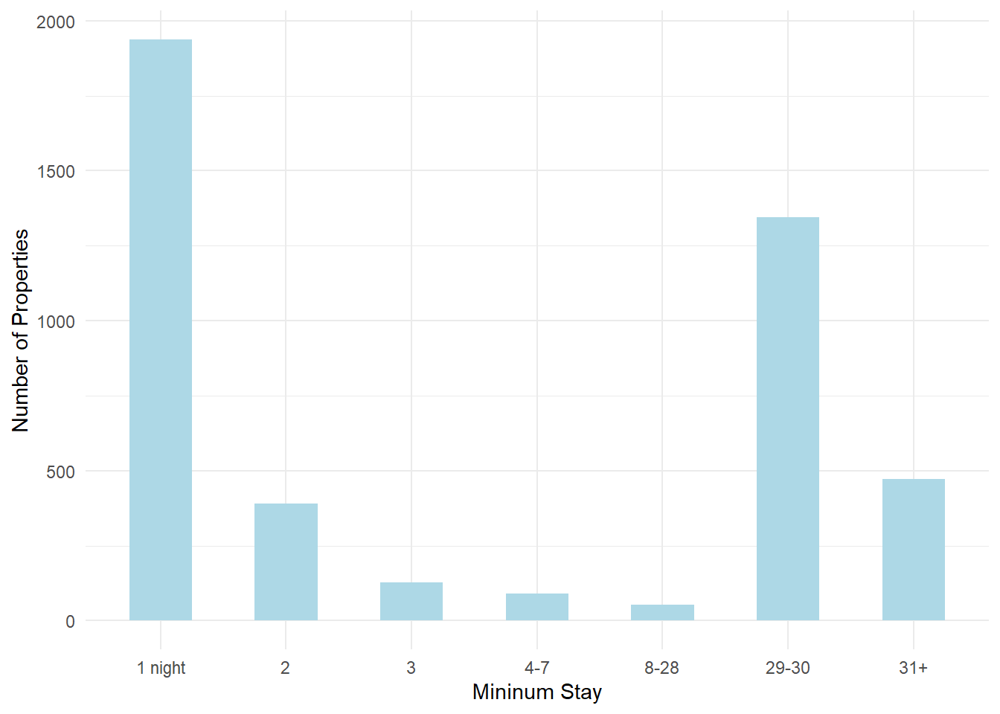
Then save the graph to a variable:
Then send this variable to ggplotly()
graph |> ggplotly()Add Table Shading with gt()
Several R packages can help you create professional and stylish tables. gt is one of them, and it integrates very well with tidyverse syntax.
Just like ggplotly(), gt is also one line away from turning a raw table output to a formatted table:
minstay_table |> gt()| bucket | count | percentage |
|---|---|---|
| 1 night | 1937 | 43.9 |
| 2 | 389 | 8.8 |
| 3 | 127 | 2.9 |
| 4-7 | 91 | 2.1 |
| 8-28 | 53 | 1.2 |
| 29-30 | 1345 | 30.5 |
| 31+ | 472 | 10.7 |
We can take this further and style this table like below. For now, just take a look at what each part does, and pick the pieces you need when you need them.
We first rename the columns for presentation (rename), then pass the result to gt(), set the table title and subtitle (tab_header), bold the column headers (tab_style), and apply a color scale to the “Percent” column. Steps are chained together using |>.
minstay_table |>
# rename the columns
rename(
`Minimum Stay` = bucket,
`Number of Properties` = count,
`Percent` = percentage) |>
# pass the result to gt()
gt() |>
# set up table title and subtitles
tab_header(
title = "Minimum Stay Requirements Cluster Just Above Boston's Short-Term Rental Threshold",
subtitle = "Boston Airbnb Listings") |>
# Bold the column headers
tab_style(cell_text(weight = "bold"),
locations = cells_column_labels(everything())) |>
# Apply a color scale
data_color(
columns = Percent,
fn = scales::col_numeric(
palette = c("white", "red"),
domain = range(minstay_table$percentage)
)) | Minimum Stay Requirements Cluster Just Above Boston's Short-Term Rental Threshold | ||
|---|---|---|
| Boston Airbnb Listings | ||
| Minimum Stay | Number of Properties | Percent |
| 1 night | 1937 | 43.9 |
| 2 | 389 | 8.8 |
| 3 | 127 | 2.9 |
| 4-7 | 91 | 2.1 |
| 8-28 | 53 | 1.2 |
| 29-30 | 1345 | 30.5 |
| 31+ | 472 | 10.7 |
Exercise
It’s your turn now. This time, you will do a mini self-directed visualization project using Boston’s Inside Airbnb dataset. We want to see two thoughtful visualizations from you, and for each, tell us what you looked at, and why.
Feel free to explore all the other columns we haven’t touched yet. Here are a few ideas to get you started:
Listing type: Inside Airbnb notes that “the majority of Airbnb listings in most cities are”entire homes”, many of which are rented all year round, disrupting housing and communities”. How many properties in Boston are entire homes and are rented all year round in this dataset?
Activity and income: Availability, price, and number of reviews can be used to estimate nights booked in the past 12 months. How many listings are rented frequently, and does Airbnb revenue encourage short-term rentals over long-term housing?
Multiple listings per host: Some hosts manage multiple listings, but they are more likely to run a business, may not live in the property, and could be skirting short-term rental rules meant to protect housing. A report shows on average, 64% of Airbnb hosts hold multiple local listings. How is the multiple listing situation in Boston?
Or, if you’re still interested in short-term rental regulations and want to see how it plays out elsewhere, go back to the Get the Data page, where you will find a long list of cities to choose from. Do a bit of research on another city, and replicate the minimum-stay analysis we did before.
You will probably work through this in two phases:
Phase 1: Explore the dataset. Feel free to make quick, rough, and plentiful exploratory plots. Jot down what interests you. Use these plots to narrow down your question and move toward a finding.
Phase 2: Settle on two specific questions you will answer with a graph. Choose the graph type that best answers each question, then refine it, add color, adjust scales, filter or subset the data, add titles. Think about the message your audience should take away, and make your graph as self-explanatory as possible.
Don’t worry if what you can currently do doesn’t yet get you exactly where your mind wants to go. Make your graphs in R anyway. The goal is to apply what we have practiced, adapt code to new problems, and show your thinking and intention around a topic.
You may work in an R script while you are developing your analysis. Once you are satisfied with your results, use a Quarto Documenet to prepare and submit your lab report.
Lab Report
In your lab report, please submit your complete code and output for your two final graphs. For each graph, write a short passage explaining what you found, and what decisions you made while creating this graph. If you think additional supporting plots would help explain your analysis, please include them as well.
Please complete your Quarto document and upload your rendered HTML file to Canvas by 9am, Wednesday, Sep 30.
Find Resources and Learn More
R for Data Science (2e). Free online book by Hadley Wickham & Garrett Grolemund. The classic intro book for R tidyverse workflow.
R Cheatsheet. One or two-page visual references for ggplot2, dplyr, tidyr, and more. Extremely handy for quick reference.
Graphing libraries and galleries. Packages like ggplot2 and plotly come with galleries of examples, complete with code. By now, you might already be able to read and modify much of this code.
R help functions and documentation. Don’t forget that R has built-in help. Use
?function_name to get details on any function.Your own experience. Everything you have done so far counts as a resource. The time you have spent to make your code work all build into your personal knowledge and intuition.
Community examples and published code snippets. If you come across someone else’s work that serves as a good example, take time to study the code, understand how it works, and consider how you might adapt it for your own project.